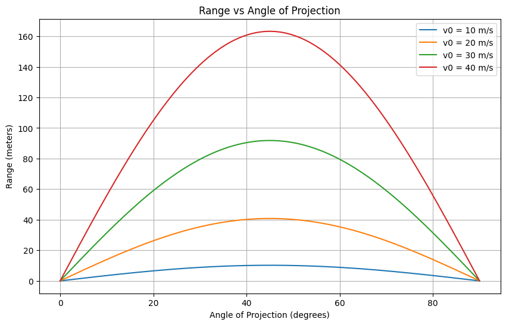

Problem 1
Investigating the Range as a Function of the Angle of Projection
1. Theoretical Foundation
Projectile motion describes the motion of an object launched into the air under the influence of gravity, assuming no air resistance. The path followed is a parabola.
Let’s consider an object projected with initial velocity \( v_0 \) at an angle \( \theta \) from the horizontal:
- Horizontal motion: $$ x(t) = v_0 \cos(\theta) \cdot t $$
- Vertical motion: $$ y(t) = v_0 \sin(\theta) \cdot t - \frac{1}{2} g t^2 $$
Where:
- \( v_0 \) is the initial velocity,
- \( \theta \) is the angle of projection,
- \( g \) is gravitational acceleration (9.8 m/s\(^2\)),
- \( t \) is time.
The range \( R \) of the projectile is the horizontal distance it travels before hitting the ground again. When launched from ground level and landing at the same height, the total time of flight is:
💡 Why Capital T? - Capital T is conventionally used to represent a total or final time — for example, the entire duration from launch to landing. - Lowercase t usually represents time as a variable, like time at any given moment during the motion. So, in projectile motion: - t → any time during the motion (like “at 2 seconds”) - T → total time the object is in the air (from launch to landing)
Example: • The vertical position: y(t)=v0sin(θ)⋅t−12gt2y(t) = v_0 \sin(\theta) \cdot t - \frac{1}{2}gt^2 (Here tt is changing continuously) • But to find when the projectile lands, we solve for the total time → that’s when we use TT: T=2v0sin(θ)gT = \frac{2v_0 \sin(\theta)}{g}
Summary: Symbol Meaning tt Any time during motion TT Total time of flight If you prefer to keep it lowercase for consistency, that's okay too — just be clear about what it represents. But using capital TT is quite common and makes the meaning clearer in scientific writing.
Plugging this into the horizontal equation, we get the range formula:
This formula shows:
- The range is maximum when \( \sin(2\theta) = 1 \), which occurs at \( \theta = 45^\circ \).
- For every angle \( \theta \), there is a complementary angle \( 90^\circ - \theta \) that produces the same range.
Important: The range is maximum when \( \sin(2\theta) = 1 \) \(\rightarrow\) \( \theta = 45^\circ \)
2. Analysis of the Range
The range of a projectile depends on several factors:
-
Angle of Projection:
The range increases as the angle rises from 0° to 45°, reaching a maximum at 45°, and then decreases symmetrically up to 90°. -
At 0° or 90°, the range is zero.
-
Maximum range occurs at 45°.
-
Initial Velocity \(v_0\):
The range is proportional to the square of the initial speed:
$$ R \propto v_0^2 $$
Doubling the speed results in four times the range.
- Gravitational Acceleration \( g \):
A higher gravitational force reduces the range. For example, under stronger gravity (like on Jupiter), the same launch would travel a shorter distance.
To visualize these effects, I wrote a Python script that:
- Simulates projectile motion across angles from 0° to 90°
- Allows adjustment of \( v_0 \) and \( g \)
- Plots Range vs. Angle for different values of initial velocity
The resulting graph confirms theoretical predictions: a symmetric curve peaking at 45°, clearly showing how both angle and velocity influence range.
3. Practical Applications
The ideal model described above assumes:
- No air resistance
- Flat terrain
- Launch and landing at the same height
In real-world situations, these assumptions rarely hold. For example:
- Sports: In games like soccer, golf, or basketball, air resistance significantly affects the projectile's trajectory.
- Engineering: When launching objects from a catapult or cannon, factors like air drag and varying terrain must be accounted for.
- Astrophysics: Spacecraft trajectories are influenced by gravitational variations and other forces.
- Military: Ballistics and targeting systems must consider the impact of wind resistance and the curvature of the Earth.
These real-world factors can be addressed by more complex models, such as:
-
Drag force:
$$ F_d = \frac{1}{2} C_d \rho A v^2 $$
where \( C_d \) is the drag coefficient, \( \rho \) is the air density, \( A \) is the cross-sectional area, and \( v \) is the velocity. -
Numerical methods to approximate motion, especially when analytical solutions are not feasible.
Despite these complexities, the basic idealized model remains a powerful starting point for understanding projectile motion, providing valuable insights into both simple and advanced systems.
4. Implementation (Python Script)
The simulation was implemented using Python and Matplotlib. The script computes the projectile's range over angles from 0° to 90° and generates a visual plot to illustrate the results.
Key features:
- Adjustable parameters like initial speed and gravity
- Graphical output of Range vs. Angle
- Ability to compare curves for multiple initial speeds
This visualization clearly shows how the peak and shape of the range curve change based on launch speed and gravitational acceleration.
A basic implementation using Matplotlib and NumPy is provided below.
import numpy as np
import matplotlib.pyplot as plt
g = 9.8 # Gravitational acceleration (m/s^2)
def calculate_range(v0, angle_deg):
angle_rad = np.radians(angle_deg)
R = (v0**2 * np.sin(2 * angle_rad)) / g
return R
v0_values = [10, 20, 30, 40]
angles = np.linspace(0, 90, 500)
plt.figure(figsize=(10, 6))
for v0 in v0_values:
ranges = [calculate_range(v0, angle) for angle in angles]
plt.plot(angles, ranges, label=f"v0 = {v0} m/s")
plt.title("Range vs Angle of Projection")
plt.xlabel("Angle of Projection (degrees)")
plt.ylabel("Range (meters)")
plt.legend()
plt.grid(True)
plt.show()

5. Limitations and Improvements
While this project captures the essential behavior of projectile motion, it doesn't account for:
- Assumes no air resistance (idealized).
- Assumes flat terrain.
- Wind, spin, and shape of the projectile can significantly affect the real path.
- In real-world applications, numerical simulations or empirical data are needed.
In future versions, the model could be extended with numerical simulation using tools like Euler's method or integrating drag forces. Additionally, a 3D version could simulate real terrain or moving targets.
Conclusion
This project offers both theoretical and visual insight into how the angle of projection affects the range of a projectile. Using fundamental equations of motion and simple Python code, we can clearly observe the mathematical beauty and real-world relevance of projectile motion.